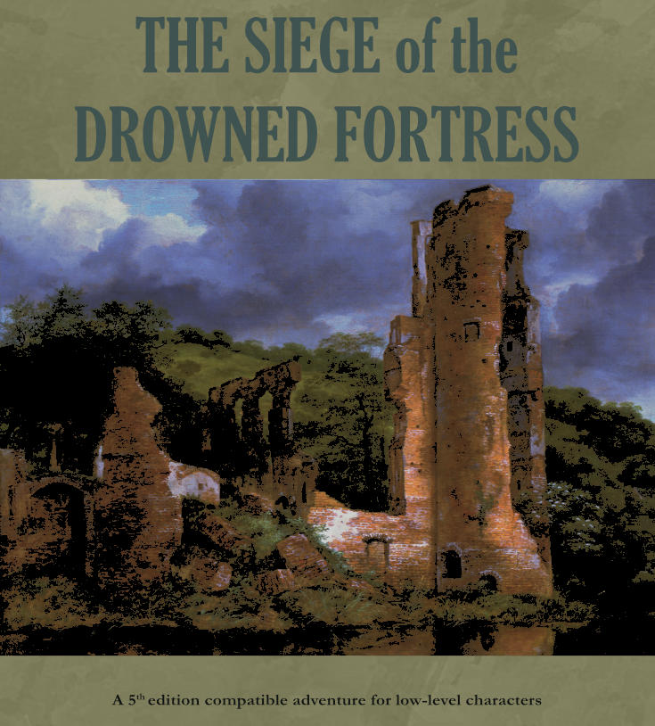

A map of the castle keep made in Dungeondraft, along with some early whiteboard sketches:



Software Used: Affinity Publisher, Affinity Photo, Dungeondraft
Studio: Self-Published
Release Status: Released in October 2024
A short 5th edition dungeon module I wrote and designed. In Siege of the Drowned Fortress, adventures explore the haunted ruins of an ancient castle, seeking to rescue a kidnapped wizard. Along the way, they discover ancient treasures, undead horrors, and a powerful evil force lurking beneath the castle.
A short, dungeon adventure designed for characters level 1-4, with a mix of social and combat encounters, a two-level dungeon, and unique magical items to discover.
This was my first attempt at publishing an adventure for an existing game system. I really enjoyed writing the lore and history of the region. When writing adventures, I try to take a minimalist approach and leave some things unsaid or only loosely described, to make room for game masters and players to fill in the blanks as they like. Instead of spelling out the outcome of the adventure, I tried to present the GM with a few interesting environments and situations without prescribing a plot or conclusion.